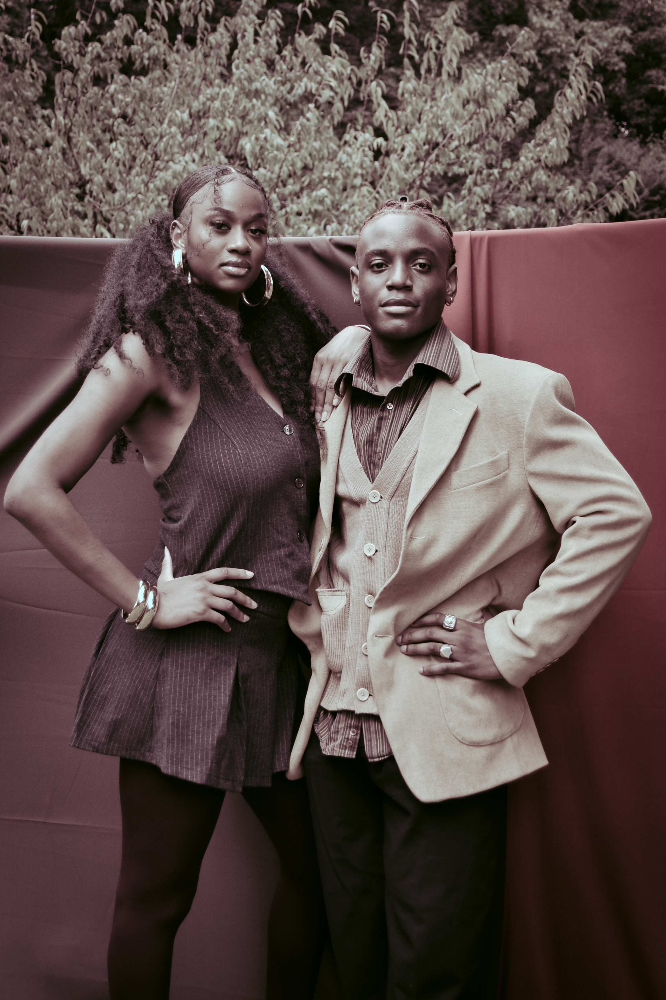
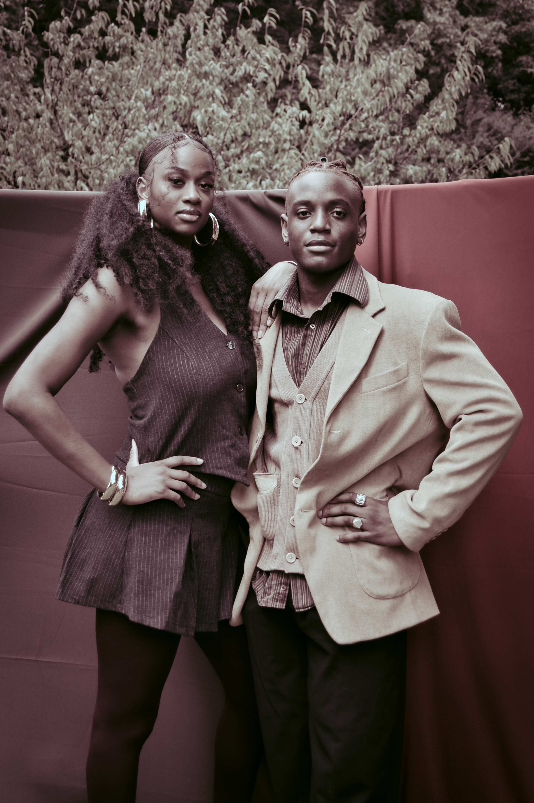
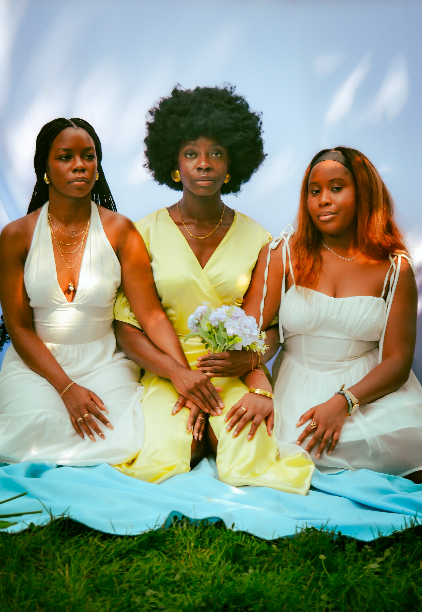
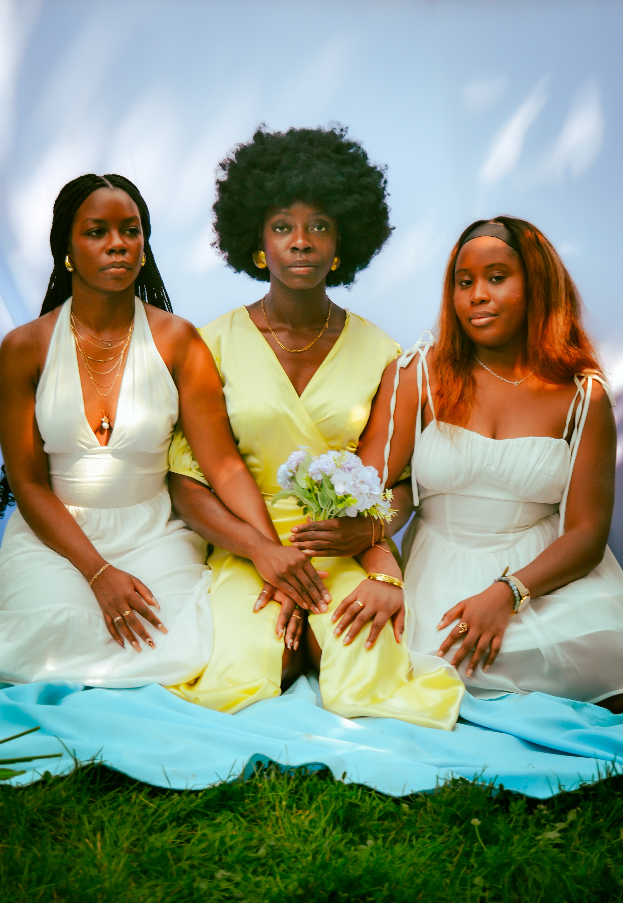
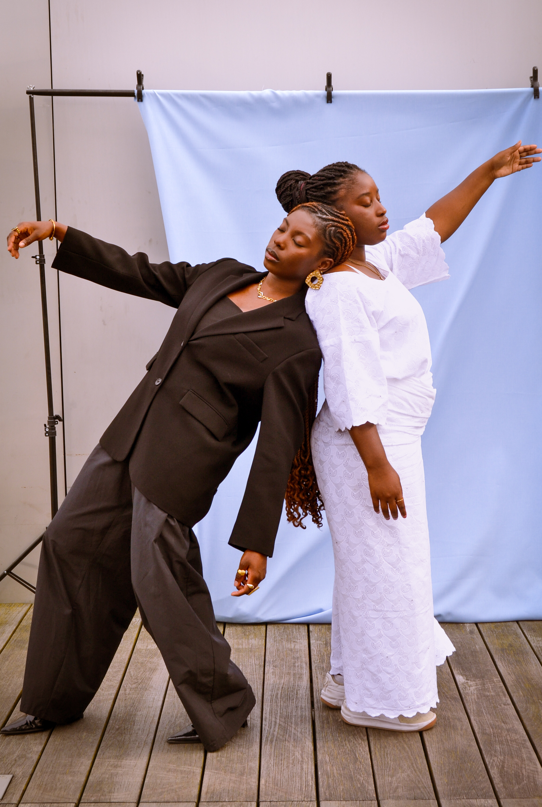
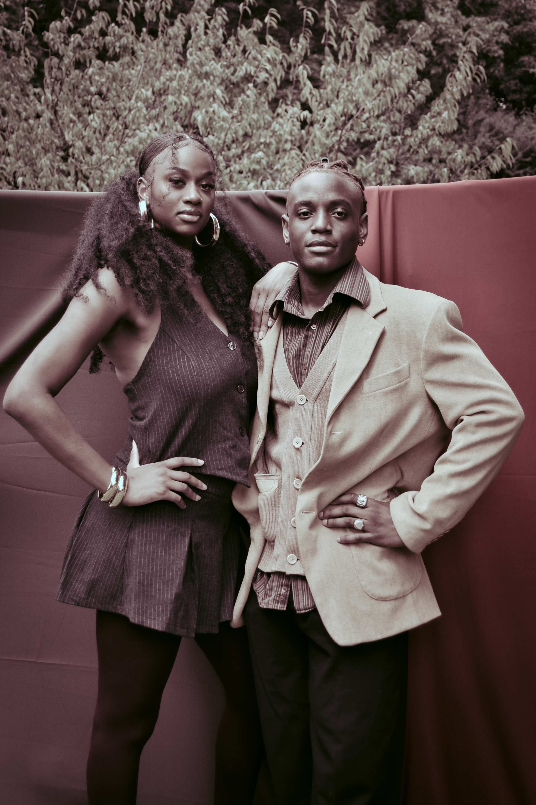

 




FATY ET OULY

UNWELL is not your average beverage brand. We craft functional drinks that embrace the complexity of human emotion, blending innovative flavors with wellness benefits to inspire your everyday life.